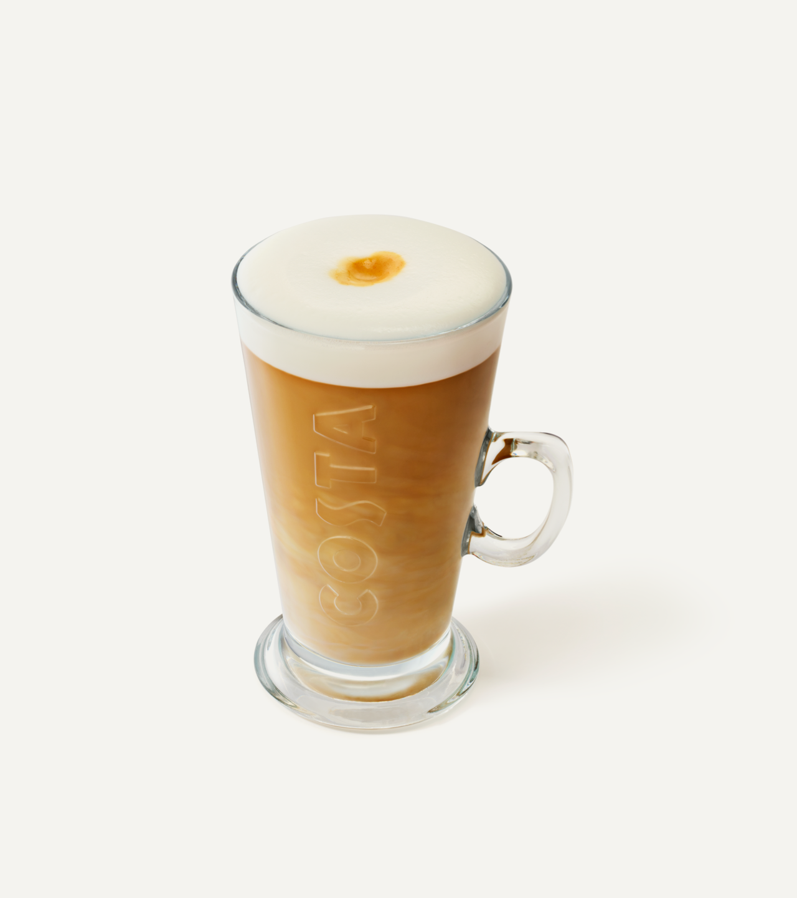
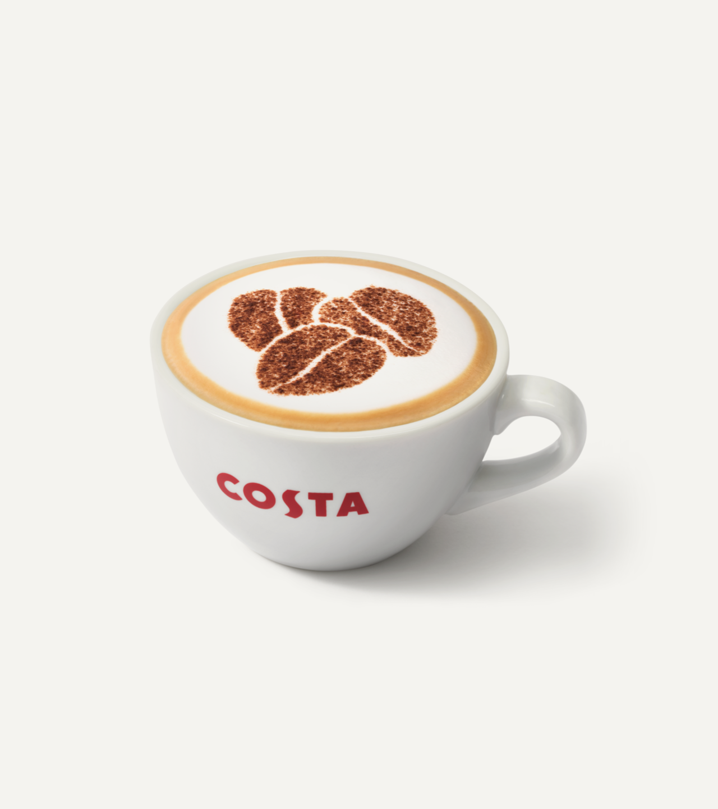
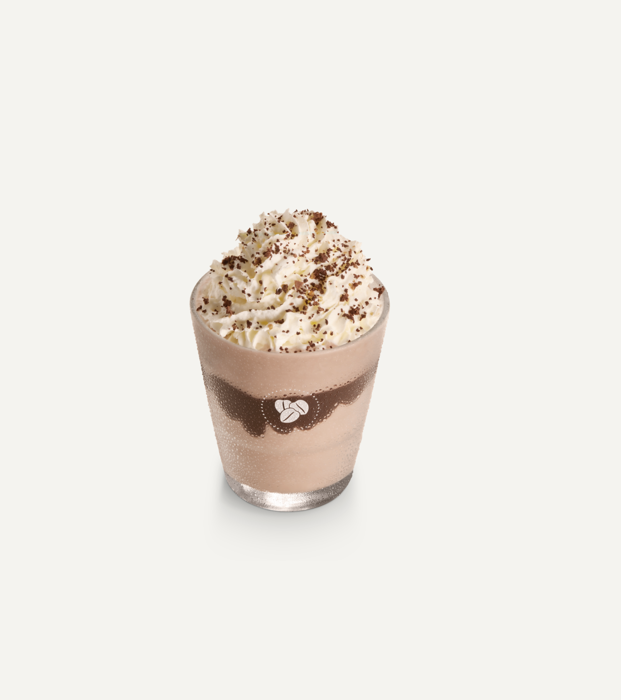
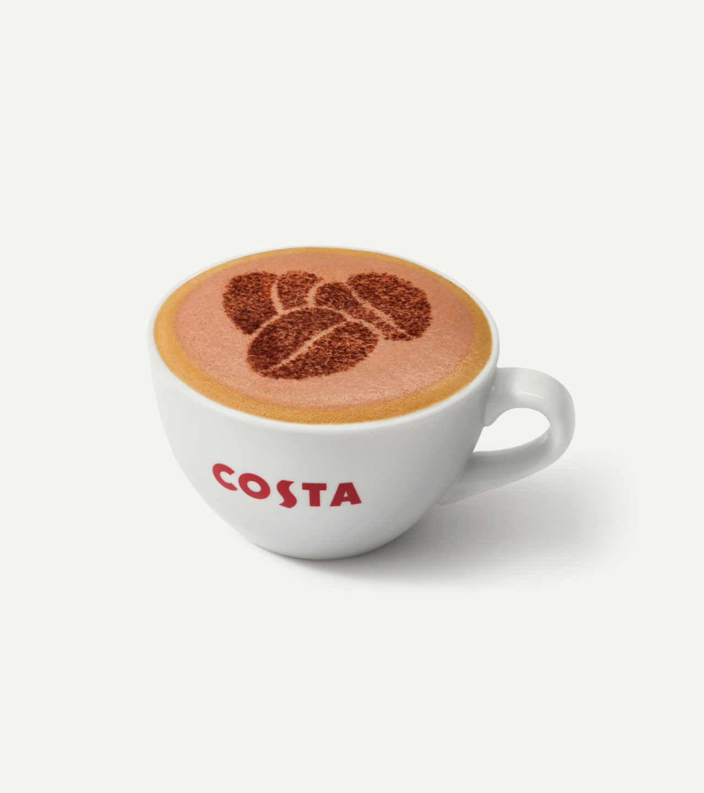

Latte
Our signature blend espresso with steamed milk for a smooth and creamy coffee. Crafted with the utmost attention to detail and quality, the latte begins with a base of rich, full-bodied espresso shots, sourced from the finest Arabica beans, ensuring a robust and flavorful foundation.
Cappuccino
Perfectly extracted espresso capped with luxurious frothy milk, finished with a chocolatey dusting. This iconic drink begins with a foundation of rich, bold espresso shots, carefully pulled to achieve the perfect balance of intensity and flavor. These shots are then combined with a small amount of velvety steamed milk, creating a luxurious and creamy texture that serves as the base of the cappuccino.
Chocolate Fudge Brownie Frappe
Deliciously rich and chocolate-y, this creamy blended drink is topped with a light topping and brownie crumbs. This delightful Chocolate Fudge Brownie Frappe is a heavenly blend of creamy milk, espresso or coffee, chocolate syrup, and chunks of delicious brownie pieces. Topped with whipped cream and drizzled with more chocolate syrup.
Mocha
Indulge in the rich fusion of espresso and chocolate with our signature mocha. Made with freshly brewed espresso, velvety steamed milk, and decadent chocolate syrup, this classic concoction is a delightful treat for coffee lovers and chocolate enthusiasts alike. Expertly steamed chocolate milk blended with espresso for a caffeinated chocolate treat.
